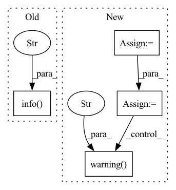

Pattern ID :12457
Before Change
n_bytes = fh_xml.write(xml_content)
logger.info("Wrote %d bytes to %s", n_bytes, output_xml_path.resolve().as_uri())
logger.info("PDF conversion done" )
return 0
After Change
input_dir = input_path
// Set default output_dir as the same directory of input files
output_dir = output_dir or input_dir
path_map = _prepare_output_paths(input_paths, output_dir, force)
if len(path_map) == 0:
logger.warning("No files to process, stopping" )
return 0
output_dir.mkdir(exist_ok=True)
In pattern: SUPERPATTERN
Frequency: 4
Non-data size: 4
Instances Fragment ID: 42377733
Project Name: bluebrain/search
Commit Name: 7dae95ebd57973adba75efbce55342e295b223bd
Time: 2021-12-17
Author: Stannislav@users.noreply.github.com
File Name: src/bluesearch/entrypoint/database/convert_pdf.py
M Class Name: AnonimousClass
N Class Name: AnonimousClass
M Method Name: run(0)
N Method Name: run(0)
M Parent Class:
N Parent Class:
M File Name: src/bluesearch/entrypoint/database/convert_pdf.py
N File Name: src/bluesearch/entrypoint/database/convert_pdf.py
M Start Line: 131
M End Line: 162
N Start Line: 158
N End Line: 221
Before Change
results = []
for index in indices:
logger.info(
f"solved_pred={solved_pred[index]:.1%}, "
f"angle={np.rad2deg(angles[index]):.1f} [deg]"
)
ee_to_obj = grasp_poses[index, :3], grasp_poses[index, 3:]
ee_to_world = pp.multiply(obj_to_world, ee_to_obj)
obj_af_to_world = reorient_poses[index, :3], reorient_poses[index, 3:]
After Change
reorient_poses = reorient_poses[keep]
angles = angles[keep]
solved_pred = solved_pred[keep]
length_pred = length_pred[keep]
bins = np.linspace(angles.min(), angles.max(), num=9)
binned = np.digitize(angles, bins)
keep = binned <= 1
grasp_poses = grasp_poses[keep]
reorient_poses = reorient_poses[keep]
angles = angles[keep]
solved_pred = solved_pred[keep]
length_pred = length_pred[keep]
indices = np.argsort(length_pred)
t_start = time.time()
results = []
for index in indices:
ee_to_obj = grasp_poses[index, :3], grasp_poses[index, 3:]
ee_to_world = pp.multiply(obj_to_world, ee_to_obj)
obj_af_to_world = reorient_poses[index, :3], reorient_poses[index, 3:]
if visualize:
obj_af = mercury.pybullet.duplicate(
env.fg_object_id,
collision=False,
rgba_color=(0, 1, 0, 0.5),
position=obj_af_to_world[0],
quaternion=obj_af_to_world[1],
)
else:
lock_renderer = pp.LockRenderer()
result = plan_reorient(
env,
mercury.geometry.Coordinate(*ee_to_world),
mercury.geometry.Coordinate(*obj_af_to_world),
)
if visualize:
pp.remove_body(obj_af)
else:
lock_renderer.restore()
if "js_place_length" in result:
logger.success(
f"angle={np.rad2deg(angles[index]):.1f} [deg], "
f"solved_pred={solved_pred[index]:.1%}, "
f"length_pred={length_pred[index]:.2g}, "
f"length_true={result["js_place_length"]:.2g}"
)
results.append(result)
else:
logger.warning(
f"angle={np.rad2deg(angles[index]):.1f} [deg], "
f"solved_pred={solved_pred[index]:.1%}, "
f"length_pred={length_pred[index]:.2g}, "
f"length_true={np.nan}"
)
if (time.time() - t_start) > timeout:
break
if not results: Fragment ID: 42377742
Project Name: wkentaro/reorientbot
Commit Name: 99e714efa337d5c39a48a90e0f70e3197bc593a2
Time: 2021-07-02
Author: www.kentaro.wada@gmail.com
File Name: examples/reorient/learned.py
M Class Name: AnonimousClass
N Class Name: AnonimousClass
M Method Name: plan_and_execute_reorient(4)
N Method Name: plan_and_execute_reorient(4)
M Parent Class:
N Parent Class:
M File Name: examples/reorient/learned.py
N File Name: examples/reorient/learned.py
M Start Line: 72
M End Line: 98
N Start Line: 73
N End Line: 149
Before Change
seq_length = torch.unique(actions, dim=1).shape[1] // Compute windows_size
demo_task_counter += Counter(task_info)
logger.info(f"Tasks Objective: {num_samples}")
logger.info(f"Tasks Annotations Progress: {demo_task_counter}" )
collected_data = label_seq(collected_data, dataloader, seq_length, idx, task_info, tasks_lang)
return collected_data, demo_task_counter
After Change
continue
if "slide_" in task:
env.reset(reset_info, i, seq_length // 2)
inter_info = env.get_info()
// check if task was achieved in sequence
task_info = tasks.get_task_info(start_info, inter_info)
if len(task_info) > 0:
inter_task = task_info.pop()
if inter_task != task:
logger.warning(f"Conflict sub task {inter_task} of {task}" )
continue
if demo_task_counter[task] < num_samples:
seq_length = torch.unique(actions[i], dim=0).shape[0] Fragment ID: 42377739
Project Name: mees/calvin
Commit Name: 3dafb1d021299e9fccc0c298baff9f08717a79e6
Time: 2021-08-26
Author: oier.mees@gmail.com
File Name: calvin/utils/automatic_lang_annotator.py
M Class Name: AnonimousClass
N Class Name: AnonimousClass
M Method Name: annotator(8)
N Method Name: annotator(8)
M Parent Class:
N Parent Class:
M File Name: calvin/utils/automatic_lang_annotator.py
N File Name: calvin/utils/automatic_lang_annotator.py
M Start Line: 29
M End Line: 46
N Start Line: 30
N End Line: 59